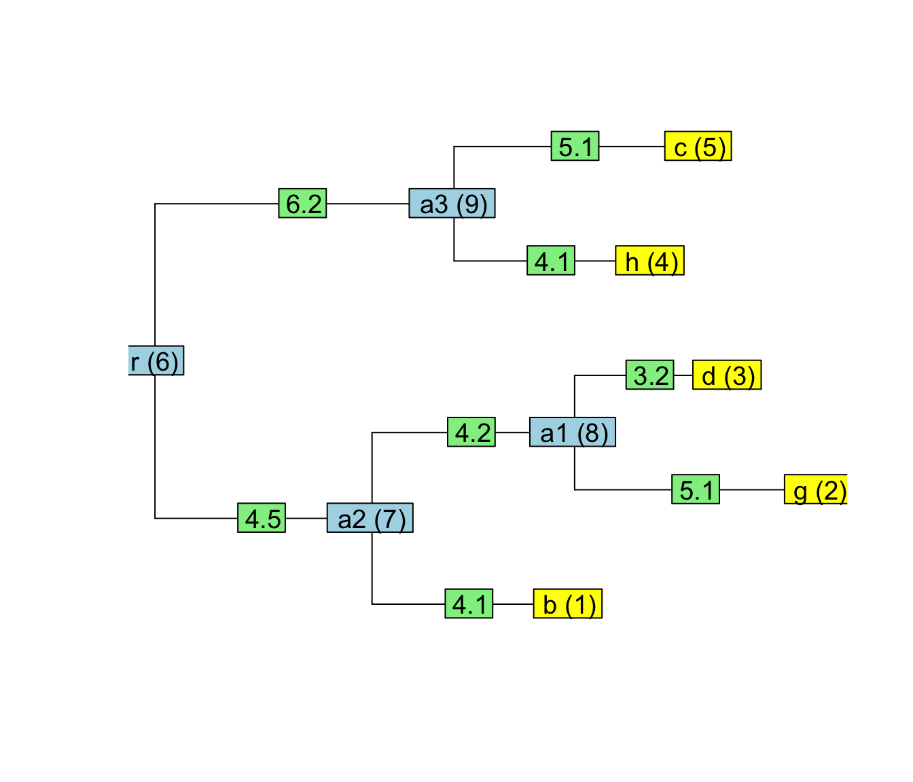

SPLITTRcppModules.RmdIn this tutorial, I show step by step how to build an R-package that is using the AbcPMM TraversalSpecificaton-class to calculate the log-likelihood of the PMM model on a given tree, trait-data and model parameters. The code for this example is available from the following directory in the SPLITT github repository:
This example is based on the R-package Rcpp, which provides a nice way to expose the functionality of a C++ class to an R script or an R-package. The PMMUsingSPLITT package provides an example of how to create a TraversalTask object and to invoke its method TraverseTree from R. Specifically, this is based on Rcpp modules as described in Chapter 7 of the following book:
Eddelbuettel, D. (2013). Seamless R and C++ Integration with Rcpp. New York, NY: Springer Science & Business Media. http://doi.org/10.1007/978-1-4614-6868-4
The PMMUsingSPLITT R-package follows the directory structure of a typical R-package including C++ code. The package has been initialized using a call to the function Rcpp::Rcpp.package.skeleton:
Rcpp::Rcpp.package.skeleton("PMMUsingSPLITT")Then, the created directory PMMUsingSPLITT has been manually renamed to PMMUsingSPLITT-R-package and the default example R and C++ files have been replaced by the code files specific for the PMM log-likelihood calculation. Here are the final directories and files found in the package:
ls -Rlt PMMUsingSPLITT-R-packagetotal 24
drwxr-xr-x 8 vmitov 1029 272 Nov 8 10:56 src
drwxr-xr-x 9 vmitov 1029 306 Nov 8 10:48 man
drwxr-xr-x 6 vmitov 1029 204 Nov 8 10:03 R
-rw-r--r-- 1 vmitov 1029 195 Nov 8 09:40 NAMESPACE
-rw-r--r-- 1 vmitov 1029 485 Nov 8 09:40 DESCRIPTION
drwxr-xr-x 3 vmitov 1029 102 Nov 7 22:53 tests
-rw-r--r-- 1 vmitov 1029 420 Nov 7 11:27 Read-and-delete-me
./src:
total 224
-rw-r--r-- 1 vmitov 1029 602 Nov 8 10:48 RcppExports.cpp
-rw-r--r-- 1 vmitov 1029 2677 Nov 8 10:42 RCPP__AbcPMM.cpp
-rw-r--r-- 1 vmitov 1029 3462 Nov 7 16:10 AbcPMM.h
-rw-r--r-- 1 vmitov 1029 1318 Nov 7 11:54 NumericTraitData.h
-rw-r--r-- 1 vmitov 1029 93322 Nov 7 11:47 SPLITT.h
-rw-r--r-- 1 vmitov 1029 3048 Nov 7 11:35 Makevars
./man:
total 56
-rw-r--r-- 1 vmitov 1029 376 Nov 8 10:48 PMMUsingSPLITT__AbcPMM__AlgorithmType.Rd
-rw-r--r-- 1 vmitov 1029 370 Nov 8 10:48 PMMUsingSPLITT__TraversalTaskAbcPMM.Rd
-rw-r--r-- 1 vmitov 1029 474 Nov 8 10:48 PMMUsingSPLITT__AbcPMM__TraversalAlgorithm.Rd
-rw-r--r-- 1 vmitov 1029 679 Nov 8 09:37 MiniBenchmark.Rd
-rw-r--r-- 1 vmitov 1029 1071 Nov 8 09:37 PMMLogLik.Rd
-rw-r--r-- 1 vmitov 1029 573 Nov 7 11:58 NewPMMCppObject.Rd
-rw-r--r-- 1 vmitov 1029 1549 Nov 7 11:58 PMMLogLikCpp.Rd
./R:
total 40
-rw-r--r-- 1 vmitov 1029 552 Nov 8 10:48 DocForRcppModules.R
-rw-r--r-- 1 vmitov 1029 3726 Nov 8 10:03 PMM.R
-rw-r--r-- 1 vmitov 1029 1148 Nov 8 10:02 zzz.R
-rw-r--r-- 1 vmitov 1029 5347 Nov 7 14:52 MiniBenchmark.R
./tests:
total 0
drwxr-xr-x 4 vmitov 1029 136 Nov 7 14:12 testthat
./tests/testthat:
total 16
-rw-r--r-- 1 vmitov 1029 583 Nov 8 09:19 test-PMMLogLikelihoodValue.R
-rw-r--r-- 1 vmitov 1029 317 Nov 7 14:56 test-PMMLogLikelihoodSpeed.RAt the top-level, the directory structure is similar to the standard structure described in Section 1.1. of the Writing R extensions manual. In the following sub-sections, I’ll describe the elements that are specific for the PMMUsingSPLITT example application.
DESCRIPTION fileThis is the standard file that tells how to build the R-package. Here is the content of this file:
Package: PMMUsingSPLITT
Type: Package
Title: An example R-package using the SPLITT library
Version: 1.0
Date: 2018-11-07
Author: Venelin Mitov
Maintainer: Venelin Mitov <vmitov@gmail.com>
Description: One paragraph description of what the package does as
one or more full sentences.
License: LGPL (>= 2)
LazyData: true
Encoding: UTF-8
Depends:
R (>= 3.1.0),
Rcpp,
methods
LinkingTo: Rcpp
Imports:
ape
RoxygenNote: 6.1.0
ByteCompile: yes
NeedsCompilation: yesNotice that the Rcpp package is listed both in Depends: and in LinkingTo:. Also, the package methods is listed in Depends: because we use Rcpp modules, which will be translated to S4 objects.
NAMESPACE fileThis file contains the names of the functions exported by the package as well as those imported by the package from other packages. Here is how this file looks like for our R-package:
useDynLib(PMMUsingSPLITT, .registration=TRUE)
exportPattern("^[[:alpha:]]+")
import(Rcpp)
import(methods)
importFrom("stats", "reorder", "rnorm", "time")
importFrom("ape", "rTraitCont", "rtree")Pay attention to the very first line useDynLib(PMMUsingSPLITT, .registration=TRUE). This tells R that the package creates a dynamic shared library called PMMUsingSPLITT. This where R will find the compiled C++ classes and methods from our package.
src
This directory contains all .cpp and .h files and a file Makevars specifying options appended to the C++ compiler command. We are already familiar with the three header files: SPLITT.h contains the SPLITT library, , NumericTraitData.h and AbcPMM.h define the input data and the TraversalSpecification-class for the PMM log-likelihood calculation (see the Writing a traversal specification guide if not feeling so). Now, let’s look what is defined in the file RCPP__AbcPMM.cpp.
// RCPP__AbcPMM.cpp
// Licence header and disclamer statement
// Needed to use Rcpp
#include <Rcpp.h>
// This will also include the NumericTraitData.h file
#include "./AbcPMM.h"We need the following comments declaring compile attributes in the form [[Rcpp::...]]. Before building the R-package, these attributes will be processed by a call to Rcpp::compileAttributes. The first attribute below ensures that our C++ code is compliant and should be compiled with enabled C++11 standard. The second attributes specifies that the openmp header omp.h should be added to the compiler include-path.
// RCPP__AbcPMM.cpp
// Licence header and disclamer statement
// ...
// [[Rcpp::plugins("cpp11")]]
// [[Rcpp::plugins(openmp)]]using namespace-statements should be used carefully in C++. The following two lines will save us from some typing later on.
// RCPP__AbcPMM.cpp
// Licence header and disclamer statement
// ...
using namespace SPLITT;
using namespace PMMUsingSPLITT;
// Prefer using explicit names from the Rcpp namespace.
// using namespace Rcpp;AbcPMM TraversalTask templateHere, we will be using uint instead of std::string for the node-names in the tree.
// RCPP__AbcPMM.cpp
// Licence header and disclamer statement
// ...
typedef TraversalTask< AbcPMM<OrderedTree<uint, double> > > TraversalTaskAbcPMM;This is because in R we will be using the class phylo from the ape package to represent trees and in each phylo object the tree topology is represented by a \((M-1)\times 2\) integer matrix named “edge”, where \(M-1\) is the number of edges in the tree. If you are not familiar with phylo-objects, the following R-code explains what I mean:
library(ape)
# tree in Newick format
newick_text <- "((b:4.1,(g:5.1,d:3.2)a1:4.2)a2:4.5,(h:4.1,c:5.1)a3:6.2)r;"
# create an obect of class phylo
tree <- read.tree(text = newick_text)
# members of the phylo object
str(tree)## List of 5
## $ edge : int [1:8, 1:2] 6 7 7 8 8 6 9 9 7 1 ...
## $ edge.length: num [1:8] 4.5 4.1 4.2 5.1 3.2 6.2 4.1 5.1
## $ Nnode : int 4
## $ node.label : chr [1:4] "r" "a2" "a1" "a3"
## $ tip.label : chr [1:5] "b" "g" "d" "h" ...
## - attr(*, "class")= chr "phylo"
## - attr(*, "order")= chr "cladewise"# the edge matrix:
tree$edge## [,1] [,2]
## [1,] 6 7
## [2,] 7 1
## [3,] 7 8
## [4,] 8 2
## [5,] 8 3
## [6,] 6 9
## [7,] 9 4
## [8,] 9 5par(cex=1.2)
plot(tree, show.tip.label = FALSE)
tiplabels(text = paste0(tree$tip.label, " (", seq_len(length(tree$tip.label)), ")"))
edgelabels(text = tree$edge.length)
nodelabels(text = paste0(tree$node.label, " (", length(tree$tip.label) + seq_len(length(tree$node.label)), ")"))
In the plot above, notice how the entries in the edge-matrix correspond to the node-ids in parentheses.
TraversalTaskAbcPMM-classThe factory function will be called from the R-layer to create a TraversalTaskAbcPMM object. This function recieves two arguments:
Rcpp::List const& tree, vec const& values: this is a phylo object wrapped in an Rcpp::List;vec const& values: a numeric vector that will be automatically converted into an std::vector<double> (note that the type SPLITT::vec is just a synonym for std::vector<double>)Here is the code for the factory function:
// RCPP__AbcPMM.cpp
// Licence header and disclamer statement
// ...
TraversalTaskAbcPMM* CreateTraversalTaskAbcPMM(
Rcpp::List const& tree, vec const& values) {
// Extract the edge-matrix and store its columns into parents and daughters vectors
Rcpp::IntegerMatrix branches = tree["edge"];
uvec parents(branches.column(0).begin(), branches.column(0).end());
uvec daughters(branches.column(1).begin(), branches.column(1).end());
// Extract the branch lenghts
vec t = Rcpp::as<vec>(tree["edge.length"]);
// Extract the number of tips in the tree
uint num_tips = Rcpp::as<Rcpp::CharacterVector>(tree["tip.label"]).size();
// The tip-names are the numbers 1,...,N
uvec tip_names = Seq(uint(1), num_tips);
// Create the input-data object
typename TraversalTaskAbcPMM::DataType data(tip_names, values);
// Create a new TraversalTask object and return a pointer
return new TraversalTaskAbcPMM(parents, daughters, t, data);
}I recommend using the name of the package as a prefix for the name of the Rcpp module. This is to reduce the risk of a conflict with same-named modules in other R-packages (the risk is real if using simple module names like Tree). The following code defines the PMMUsingSPLITT__TraversalTaskAbcPMM Rcpp module.
// RCPP__AbcPMM.cpp
// Licence header and disclamer statement
// ...
RCPP_MODULE(PMMUsingSPLITT__TraversalTaskAbcPMM) {
// Expose the TraversalTaskAbcPMM class - this is the main class in
// the module, which will be instantiated from R using the factory function
// we've just written.
Rcpp::class_<TraversalTaskAbcPMM>( "PMMUsingSPLITT__TraversalTaskAbcPMM" )
// The <argument-type-list> MUST MATCH the arguments of the factory function
// defined above.
.factory<Rcpp::List const&, vec const&>( &CreateTraversalTaskAbcPMM )
// Expose the method that we will use to execute the TraversalTask
.method( "TraverseTree", &TraversalTaskAbcPMM::TraverseTree )
;
}ParameterTypes and StateTypesThe above Rcpp module is fairly simple because both, the ParameterType and the StateType declared in the TraversalSpecification-class are std::vector<double> which is known to Rcpp. It is possible to transfer objects of user-defined classes between R and C++, but this requires a little more work when defining the Rcpp module. Here, I am giving an example, which allows to obtain information about the OpenMP version and number of traits from R. This is the complete version of the Rcpp module used in the example R-package:
// RCPP__AbcPMM.cpp
// Licence header and disclamer statement
// ...
// This will enable returning a copy of the `TraversalAlgorithm`-object stored in
// a `TraversalTaskAbcPMM` object to a R. This will be used in the MiniBenchmark
// R-function to check things like the OpenMP version used during compilation and
// the number of OpenMP threads at runtime.
RCPP_EXPOSED_CLASS_NODECL(TraversalTaskAbcPMM::AlgorithmType)
RCPP_MODULE(PMMUsingSPLITT__TraversalTaskAbcPMM) {
// Expose the properties VersionOPENMP and NumOmpThreads from the base
// TraversalAlgorithm class
Rcpp::class_<TraversalTaskAbcPMM::AlgorithmType::ParentType> (
"PMMUsingSPLITT__AbcPMM__TraversalAlgorithm"
)
.property( "VersionOPENMP",
&TraversalTaskAbcPMM::AlgorithmType::ParentType::VersionOPENMP )
.property( "NumOmpThreads",
&TraversalTaskAbcPMM::AlgorithmType::ParentType::NumOmpThreads )
;
// Expose the TraversalTaskAbcPMM::AlgorithmType specifying that it derives
// from the base TraversalAlgorithm class
Rcpp::class_<TraversalTaskAbcPMM::AlgorithmType> (
"PMMUsingSPLITT__AbcPMM__AlgorithmType"
)
.derives<TraversalTaskAbcPMM::AlgorithmType::ParentType>(
"PMMUsingSPLITT__AbcPMM__TraversalAlgorithm"
)
;
// Finally, expose the TraversalTaskAbcPMM class - this is the main class in
// the module, which will be instantiated from R using the factory function
// we've just written.
Rcpp::class_<TraversalTaskAbcPMM>( "PMMUsingSPLITT__TraversalTaskAbcPMM" )
// The <argument-type-list> MUST MATCH the arguments of the factory function
// defined above.
.factory<Rcpp::List const&, vec const&>( &CreateTraversalTaskAbcPMM )
// Expose the method that we will use to execute the TraversalTask
.method( "TraverseTree", &TraversalTaskAbcPMM::TraverseTree )
// Expose the algorithm property
.property( "algorithm", &TraversalTaskAbcPMM::algorithm )
;
}RcppExports.cpp
The last file in the src directory is RcppExports.cpp. This file is automatically generated by Rcpp when calling Rcpp::compileAttributes().
R
This directory contains the R files in the package. I’ll briefly describe each one.
zzz.R
This R-script is executed by R when loading the package. It contains a single line of code loading the Rcpp module we’ve just created:
# loading the RCPP C++ modules
loadModule( "PMMUsingSPLITT__TraversalTaskAbcPMM", TRUE )PMM.R
Here, we define two ways to calculate the PMM log-likelihood:
This how simple the code looks like in R. The only problem I have with it is that it is very slow (see benchmark at the end).
# PMM.R
# PMMUsingSPLITT
# Copyright, License and disclamer statments...
#' Calculate the PMM log-likelihood for a given tree, data and model parameters
#' @param x a numerical vector of size N, where N is the number of tips in tree
#' @param tree a phylo object
#' @param x0,sigma2,sigmae2 parameters of the PMM:
#' \describe{
#' \item{x0}{value at the root of tree excluding whte noise;}
#' \item{sigma2}{unit-time variance increment of the heritable component;}
#' \item{sigmae2}{variance of the non-heritable component.}
#' }
#' @param ord an integer vector denoting the pruning order. This should be the
#' result from calling `reorder(tree, order = "postorder", index.only = TRUE)`,
#' which is also set as a default value. Can be passed as argument to speed-up
#' the calculation.
#' @return the log-likelihood value.
PMMLogLik <- function(
x, tree, x0, sigma2, sigmae2,
ord = reorder(tree, order = "postorder", index.only = TRUE)) {
# number of tips in the tree
N <- length(tree$tip.label)
# total number of nodes in the tree (tips, internal nodes and root node)
M <- nrow(tree$edge) + 1L
# state variables for each node
a <- b <- c <- rep(0.0, M)
# indices of the rows in tree$edge in pruning order
if(is.null(ord)) {
ord <- reorder(tree, order = "postorder", index.only = TRUE)
}
for(o in ord) {
# daughter node
i <- tree$edge[o, 2]
# parent node
j <- tree$edge[o, 1]
# branch length
t <- tree$edge.length[o]
if(i <= N) {
# initialize a tip node
a[i] <- -0.5 / sigmae2
b[i] <- x[i] / sigmae2
c[i] <- -0.5 * (x[i]*b[i] + log(2*pi*sigmae2))
}
d = 1 - 2*a[i]*sigma2*t
# the order is important
c[i] <- c[i] - 0.5*log(d) + 0.5*b[i]*b[i]*sigma2*t/d
a[i] <- a[i] / d
b[i] <- b[i] / d
a[j] <- a[j] + a[i]
b[j] <- b[j] + b[i]
c[j] <- c[j] + c[i]
}
# for phylo objects, N+1 denotes the root node
a[N+1]*x0^2 + b[N+1]*x0 + c[N+1]
}#' Calculate the PMM log-likelihood for a given tree, data and model parameters using the Rcpp module
#' @inheritParams PMMLogLik
#' @param cppObject a previously created object returned by \code{\link{NewPMMCppObject}}
#' @param mode an integer denoting the mode for traversing the tree, i.e. serial vs paralle.
#'
#' @return the log-likelihood value.
PMMLogLikCpp <- function(x, tree, x0, sigma2, sigmae2,
cppObject = NewPMMCppObject(x, tree),
mode = getOption("SPLITT.postorder.mode", 0)) {
abc <- cppObject$TraverseTree(c(sigma2, sigmae2), mode)
abc[1]*x0^2 + abc[2]*x0 + abc[3]
}
#' Create an instance of the RCPP_PMM module for a given tree and trait data
#'
#' @inheritParams PMMLogLik
#' @return an object to be passed as argument of the \link{PMMLogLikCpp} function.
#' @seealso \link{PMMLogLikCpp}
NewPMMCppObject <- function(x, tree) {
# this calls the CreateTraversalTaskAbcPMM function in RCPP_AbcPMM.cpp
PMMUsingSPLITT__TraversalTaskAbcPMM$new(tree, x[1:length(tree$tip.label)])
}MiniBenchmark.R
In this file, I wrote a simple performance benchmark measuring the time for PMM-log-likelihood calculation by the R and C++ implementation. The file defines a function called MiniBenchmark with two arguments:
DocForRcppModules.R
In this file, I wrote Roxygen2 comment blocks for the exposed C++ classes. This was needed to avoid a warning message during the quality check for the package (devtools::check). Here is the content of this file:
#' Rcpp module for the \code{TraversalTaskAbcPMM}-class
#' @name PMMUsingSPLITT__TraversalTaskAbcPMM
#' @aliases Rcpp_PMMUsingSPLITT__TraversalTaskAbcPMM-class
NULL
#' \code{TraversalAlgorithm}-type used in \code{AbcPMM}
#' @name PMMUsingSPLITT__AbcPMM__AlgorithmType
#' @aliases Rcpp_PMMUsingSPLITT__AbcPMM__AlgorithmType-class
NULL
#' Base class for \code{PMMUsingSPLITT::AbcPMM::AlgorithmType}
#' @name PMMUsingSPLITT__AbcPMM__TraversalAlgorithm
#' @aliases Rcpp_PMMUsingSPLITT__AbcPMM__TraversalAlgorithm-class
#' @slot algorithm algorithm.
NULLtests/testthat
In this directory, there are two unit-tests for the package. The first test compares the log-likelihood values calculated by the R and the C++ implementation for a given random tree, data and model parameters. Here is the code for this unit-test:
library(testthat)
context("Test R and Cpp code calculate the same PMM log-likelihood")
library(ape)
library(PMMUsingSPLITT)
set.seed(10)
N <- 1000
x0 <- 0.1
alpha <- 1
theta <- 10
sigma2 <- 0.25
sigmae2 <- 1
tree <- rtree(N)
g <- rTraitCont(tree, model = "OU", root.value = x0,
alpha = alpha, sigma = sqrt(sigma2),
ancestor = FALSE)
x <- g + rnorm(n = N, mean = 0, sd = sqrt(sigmae2))
test_that(
"PMMLogLik == PMMLogLikCpp",
expect_equal(PMMLogLik(x, tree, x0, sigma2, sigmae2),
PMMLogLikCpp(x, tree, x0, sigma2, sigmae2))
)The second test validates that the MiniBenchmark function executes without error:
library(testthat)
context("Test MiniBenchmark(1000, 10) passes without errors")
library(PMMUsingSPLITT)
test_that("MiniBenchmark runs without errors", {
expect_output(df <- PMMUsingSPLITT::MiniBenchmark(1000, 10), "Measuring calculation times...")
expect_s3_class(df, "data.frame")
})We install the package with the following command:
devtools::install("./PMMUsingSPLITT-R-package")On my computer this produces the following output:
✔ checking for file ‘/Users/vmitov/Documents/Bio/Projects/SPLITT/PMMUsingSPLITT-R-package/DESCRIPTION’ ...
─ preparing ‘PMMUsingSPLITT’:
✔ checking DESCRIPTION meta-information ...
─ cleaning src
─ checking for LF line-endings in source and make files and shell scripts
─ checking for empty or unneeded directories
─ building ‘PMMUsingSPLITT_1.0.tar.gz’
Warning: invalid uid value replaced by that for user 'nobody'
Running /Library/Frameworks/R.framework/Resources/bin/R CMD INSTALL \
/var/folders/nb/_b5mkf753p3c86s9nrpk33gc002289/T//RtmpdUvSl4/PMMUsingSPLITT_1.0.tar.gz --install-tests
* installing to library ‘/Users/vmitov/Library/R/3.5/library’
* installing *source* package ‘PMMUsingSPLITT’ ...
** libs
/usr/local/clang6/bin/clang++ -I"/Library/Frameworks/R.framework/Resources/include" -DNDEBUG -fopenmp -I"/Users/vmitov/Library/R/3.5/library/Rcpp/include" -I/usr/local/include -fPIC -Wall -g -O2 -c RCPP__AbcPMM.cpp -o RCPP__AbcPMM.o
/usr/local/clang6/bin/clang++ -I"/Library/Frameworks/R.framework/Resources/include" -DNDEBUG -fopenmp -I"/Users/vmitov/Library/R/3.5/library/Rcpp/include" -I/usr/local/include -fPIC -Wall -g -O2 -c RcppExports.cpp -o RcppExports.o
/usr/local/clang6/bin/clang++ -dynamiclib -Wl,-headerpad_max_install_names -undefined dynamic_lookup -single_module -multiply_defined suppress -L/Library/Frameworks/R.framework/Resources/lib -L/usr/local/lib -o PMMUsingSPLITT.so RCPP__AbcPMM.o RcppExports.o -fopenmp -F/Library/Frameworks/R.framework/.. -framework R -Wl,-framework -Wl,CoreFoundation
installing to /Users/vmitov/Library/R/3.5/library/PMMUsingSPLITT/libs
** R
** tests
** byte-compile and prepare package for lazy loading
** help
*** installing help indices
** building package indices
** testing if installed package can be loaded
* DONE (PMMUsingSPLITT)We run the unit-tests the following command:
devtools::test("./PMMUsingSPLITT-R-package")On my computer this produces the following output:
Loading PMMUsingSPLITT
Testing PMMUsingSPLITT
✔ | OK F W S | Context
✔ | 2 | Test MiniBenchmark(1000, 10) passes without errors [1.7 s]
✔ | 1 | Test R and Cpp code calculate the same PMM log-likelihood
══ Results ════════════════════════════════════════════════════════════════════════════════════════════════════════
Duration: 1.8 s
OK: 3
Failed: 0
Warnings: 0
Skipped: 0library(PMMUsingSPLITT)## Loading required package: Rcpp# with a small tree
MiniBenchmark(N=100, Ntests = 1000)## Performing a mini-benchmark of the PMM log-likelihood calculation with
## a tree of size N= 100 ;
## Calling each likelihood calculation Ntests= 1000 times ...
## CPU: Intel(R) Core(TM) i7-4850HQ CPU @ 2.30GHz
## OpenMP version: 201107
## Number of threads: 8
## Measuring calculation times...## model mode time.ms
## 1 PMM R (serial) 1.590
## 2 PMM C++ (AUTO) 0.018
## 3 PMM C++ (SINGLE_THREAD_LOOP_POSTORDER) 0.017
## 4 PMM C++ (SINGLE_THREAD_LOOP_PRUNES) 0.016
## 5 PMM C++ (SINGLE_THREAD_LOOP_VISITS) 0.021
## 6 PMM C++ (MULTI_THREAD_LOOP_PRUNES) 0.060
## 7 PMM C++ (MULTI_THREAD_LOOP_VISITS) 0.079
## 8 PMM C++ (MULTI_THREAD_LOOP_VISITS_THEN_LOOP_PRUNES) 0.096
## 9 PMM C++ (MULTI_THREAD_VISIT_QUEUE) 1.737
## 10 PMM C++ (MULTI_THREAD_LOOP_PRUNES_NO_EXCEPTION) 0.212
## 11 PMM C++ (HYBRID_LOOP_PRUNES) 0.053
## 12 PMM C++ (HYBRID_LOOP_VISITS) 0.050
## 13 PMM C++ (HYBRID_LOOP_VISITS_THEN_LOOP_PRUNES) 0.041# with a bigger tree
MiniBenchmark(N=1000, Ntests = 100)## Performing a mini-benchmark of the PMM log-likelihood calculation with
## a tree of size N= 1000 ;
## Calling each likelihood calculation Ntests= 100 times ...
## CPU: Intel(R) Core(TM) i7-4850HQ CPU @ 2.30GHz
## OpenMP version: 201107
## Number of threads: 8
## Measuring calculation times...## model mode time.ms
## 1 PMM R (serial) 17.60
## 2 PMM C++ (AUTO) 0.09
## 3 PMM C++ (SINGLE_THREAD_LOOP_POSTORDER) 0.10
## 4 PMM C++ (SINGLE_THREAD_LOOP_PRUNES) 0.12
## 5 PMM C++ (SINGLE_THREAD_LOOP_VISITS) 0.12
## 6 PMM C++ (MULTI_THREAD_LOOP_PRUNES) 0.09
## 7 PMM C++ (MULTI_THREAD_LOOP_VISITS) 0.16
## 8 PMM C++ (MULTI_THREAD_LOOP_VISITS_THEN_LOOP_PRUNES) 0.36
## 9 PMM C++ (MULTI_THREAD_VISIT_QUEUE) 15.80
## 10 PMM C++ (MULTI_THREAD_LOOP_PRUNES_NO_EXCEPTION) 0.08
## 11 PMM C++ (HYBRID_LOOP_PRUNES) 0.09
## 12 PMM C++ (HYBRID_LOOP_VISITS) 0.10
## 13 PMM C++ (HYBRID_LOOP_VISITS_THEN_LOOP_PRUNES) 0.15# with a very big tree
MiniBenchmark(N=10000, Ntests = 10)## Performing a mini-benchmark of the PMM log-likelihood calculation with
## a tree of size N= 10000 ;
## Calling each likelihood calculation Ntests= 10 times ...
## CPU: Intel(R) Core(TM) i7-4850HQ CPU @ 2.30GHz
## OpenMP version: 201107
## Number of threads: 8
## Measuring calculation times...## model mode time.ms
## 1 PMM R (serial) 169.0
## 2 PMM C++ (AUTO) 0.3
## 3 PMM C++ (SINGLE_THREAD_LOOP_POSTORDER) 1.1
## 4 PMM C++ (SINGLE_THREAD_LOOP_PRUNES) 1.2
## 5 PMM C++ (SINGLE_THREAD_LOOP_VISITS) 1.2
## 6 PMM C++ (MULTI_THREAD_LOOP_PRUNES) 0.5
## 7 PMM C++ (MULTI_THREAD_LOOP_VISITS) 0.4
## 8 PMM C++ (MULTI_THREAD_LOOP_VISITS_THEN_LOOP_PRUNES) 0.5
## 9 PMM C++ (MULTI_THREAD_VISIT_QUEUE) 153.0
## 10 PMM C++ (MULTI_THREAD_LOOP_PRUNES_NO_EXCEPTION) 0.3
## 11 PMM C++ (HYBRID_LOOP_PRUNES) 0.3
## 12 PMM C++ (HYBRID_LOOP_VISITS) 1.2
## 13 PMM C++ (HYBRID_LOOP_VISITS_THEN_LOOP_PRUNES) 0.6The last step before releasing the R-package to CRAN is to run a code and documentation consistency check.
This is done by running:
devtools::check("./PMMUsingSPLITT-R-package")On my computer this produces the following output:
Updating PMMUsingSPLITT documentation
Loading PMMUsingSPLITT
Warning: The existing 'NAMESPACE' file was not generated by roxygen2, and will not be overwritten.
── Building ────────────────────────────────────────────────── PMMUsingSPLITT ──
Setting env vars:
● CFLAGS : -Wall -pedantic -fdiagnostics-color=always
● CXXFLAGS : -Wall -pedantic -fdiagnostics-color=always
● CXX11FLAGS: -Wall -pedantic -fdiagnostics-color=always
────────────────────────────────────────────────────────────────────────────────
✔ checking for file ‘/Users/vmitov/Documents/Bio/Projects/SPLITT/PMMUsingSPLITT-R-package/DESCRIPTION’ ...
─ preparing ‘PMMUsingSPLITT’:
✔ checking DESCRIPTION meta-information ...
─ cleaning src
─ checking for LF line-endings in source and make files and shell scripts
─ checking for empty or unneeded directories
─ building ‘PMMUsingSPLITT_1.0.tar.gz’
Warning: invalid uid value replaced by that for user 'nobody'
── Checking ────────────────────────────────────────────────── PMMUsingSPLITT ──
Setting env vars:
● _R_CHECK_CRAN_INCOMING_REMOTE_: FALSE
● _R_CHECK_CRAN_INCOMING_ : FALSE
● _R_CHECK_FORCE_SUGGESTS_ : FALSE
── R CMD check ─────────────────────────────────────────────────────────────────
─ using log directory ‘/private/var/folders/nb/_b5mkf753p3c86s9nrpk33gc002289/T/RtmpdUvSl4/PMMUsingSPLITT.Rcheck’
─ using R version 3.5.1 (2018-07-02)
─ using platform: x86_64-apple-darwin15.6.0 (64-bit)
─ using session charset: UTF-8
─ using options ‘--no-manual --as-cran’
✔ checking for file ‘PMMUsingSPLITT/DESCRIPTION’
─ checking extension type ... Package
─ this is package ‘PMMUsingSPLITT’ version ‘1.0’
─ package encoding: UTF-8
✔ checking package namespace information ...
✔ checking package dependencies (14.3s)
✔ checking if this is a source package
✔ checking if there is a namespace
✔ checking for executable files ...
✔ checking for hidden files and directories
✔ checking for portable file names
✔ checking for sufficient/correct file permissions
✔ checking serialization versions
✔ checking whether package ‘PMMUsingSPLITT’ can be installed (16.3s)
✔ checking installed package size ...
✔ checking package directory ...
✔ checking DESCRIPTION meta-information ...
✔ checking top-level files
✔ checking for left-over files
✔ checking index information
✔ checking package subdirectories ...
✔ checking R files for non-ASCII characters ...
✔ checking R files for syntax errors ...
✔ checking whether the package can be loaded (488ms)
✔ checking whether the package can be loaded with stated dependencies (458ms)
✔ checking whether the package can be unloaded cleanly (462ms)
✔ checking whether the namespace can be loaded with stated dependencies (460ms)
✔ checking whether the namespace can be unloaded cleanly (482ms)
✔ checking loading without being on the library search path (500ms)
✔ checking dependencies in R code (517ms)
✔ checking S3 generic/method consistency (999ms)
✔ checking replacement functions (467ms)
✔ checking foreign function calls (510ms)
✔ checking R code for possible problems (2.7s)
✔ checking Rd files ...
✔ checking Rd metadata ...
✔ checking Rd line widths ...
✔ checking Rd cross-references ...
✔ checking for missing documentation entries (511ms)
✔ checking for code/documentation mismatches (1.4s)
✔ checking Rd \usage sections (1.1s)
✔ checking Rd contents ...
✔ checking for unstated dependencies in examples ...
✔ checking line endings in C/C++/Fortran sources/headers
✔ checking line endings in Makefiles
✔ checking compilation flags in Makevars ...
✔ checking for GNU extensions in Makefiles
✔ checking for portable use of $(BLAS_LIBS) and $(LAPACK_LIBS)
✔ checking pragmas in C/C++ headers and code ...
✔ checking compilation flags used
✔ checking compiled code ...
─ checking examples ... NONE
── R CMD check results ───────────────────────────────── PMMUsingSPLITT 1.0 ────
Duration: 43.4s
0 errors ✔ | 0 warnings ✔ | 0 notes ✔